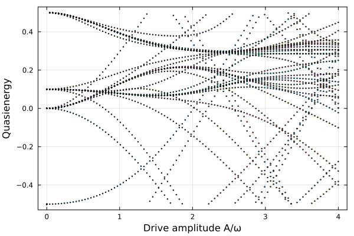

Floquet Systems
This example defines an operator algebra and matrix representations for the Floquet space of a periodically driven system, and couples it to a spin-1 to compute the quasienergies of a driven three-level system.
Background: Floquet theory
A quantum system with a time-periodic Hamiltonian $H(t) = H(t+T)$ can be reduced to a static eigenvalue problem by embedding it into a Floquet-Hilbert space $\mathcal{H}_\text{phys} \otimes \mathcal{H}_\text{floquet}$. The second factor carries the Fourier harmonics of the drive. On the Floquet space we have the operators:
- the Floquet ladder $F$ with $F|n\rangle = |n{+}1\rangle$ (absorption of one drive photon),
- the Floquet number $N$ with $N|n\rangle = n|n\rangle$.
For a periodically driven two-level system
\[H(t) = \tfrac{\varepsilon}{2}\,\sigma_z + A\cos(\omega t)\,\sigma_x\]
the Floquet Hamiltonian is
\[H_F = \tfrac{\varepsilon}{2}\,\sigma_z + \omega N + \tfrac{A}{2}\,\sigma_x(F + F^\dagger).\]
Its eigenvalues are the quasienergies of the driven system; because $\mathcal{H}_\text{floquet}$ is infinite-dimensional we truncate to $|n| \le n_\text{max}$.
Defining the custom Floquet algebra
The required pieces are listed in Extending and performance hooks. Compared to the Clock operators, the Floquet operators also commute with operators of other algebras through @commutative, and their mul_effect simplifies products.
Let's load the package and import some things we need to overload or use
using FermionicHilbertSpacesusing FermionicHilbertSpaces: AbstractSymimport FermionicHilbertSpaces.NonCommutativeProducts: @nc, NCMul, @commutative, mul_effectSymbolic types
FloquetBasis represents a Floquet degree of freedom (having an id allows multiple Floquet modes). FloquetLadder represents $F^k$ and FloquetNumber represents $N^p$.
struct FloquetBasis id::Intendstruct FloquetLadder <: AbstractSym shift::Int # +1 → F (raising), −1 → F† (lowering), k → F^k basis::FloquetBasisendstruct FloquetNumber <: AbstractSym power::Int # exponent p in N^p basis::FloquetBasisendFloquetLadder(b::FloquetBasis) = FloquetLadder(1, b)Base.adjoint(F::FloquetLadder) = FloquetLadder(-F.shift, F.basis)Base.adjoint(N::FloquetNumber) = N # N is HermitianBase.show(io::IO, F::FloquetLadder) = print(io, "F^", F.shift)Base.show(io::IO, N::FloquetNumber) = print(io, "N^", N.power)const Floquets = Union{FloquetLadder,FloquetNumber}Union{Main.FloquetLadder, Main.FloquetNumber}@nc declaration
@nc FloquetLadder FloquetNumber@commutative declarations
To make Floquet operators commute with all other AbstractSyms operators we write
@commutative Floquets AbstractSymMultiplication rules via mul_effect
We will sort Floquet operators from different modes by their 'id', and for operators of the same mode we will put number operators before ladder operators.
function mul_effect(a::Floquets, b::Floquets) a.basis.id > b.basis.id && return b * a # different subsystem: sort by id a.basis.id < b.basis.id && return nothing # already in order return floquet_mul(a, b) # same subsystem: apply algebraendmul_effect (generic function with 21 methods)$F^j \cdot F^k = F^{j+k}$. Special case $j+k=0$: $F \cdot F^\dagger = \mathbf{1}$.
function floquet_mul(a::FloquetLadder, b::FloquetLadder) total_shift = a.shift + b.shift total_shift == 0 && return 1 return FloquetLadder(total_shift, a.basis)endfloquet_mul (generic function with 1 method)$N^p \cdot N^q = N^{p+q}$. Special case $p=q=0$: $N^0 = \mathbf{1}$.
function floquet_mul(a::FloquetNumber, b::FloquetNumber) a.power == b.power == 0 && return 1 return FloquetNumber(a.power + b.power, a.basis)endfloquet_mul (generic function with 2 methods)$F^k \cdot N = N \cdot F^k - k\,F^k$, from $[N, F^k] = k\,F^k$ rearranged as $F^k N = N F^k - k F^k$.
function floquet_mul(a::FloquetLadder, b::FloquetNumber) if b.power == 1 return b * a - a.shift * a # Base case: F^k * N = N * F^k - k * F^k else N_remaining = FloquetNumber(b.power - 1, b.basis) term1 = FloquetNumber(1, b.basis) * a * N_remaining # N * F^k * N^(p-1) term2 = -a.shift * a * N_remaining # -k * F^k * N^(p-1) return term1 + term2 end throw(ArgumentError("Should not reach here"))endfloquet_mul (generic function with 3 methods)$N \cdot F^k$ is already in normal order ($N$ sorts before $F$).
floquet_mul(::FloquetNumber, ::FloquetLadder) = nothingfloquet_mul (generic function with 4 methods)apply_local_operator
Let's make a type for the Floquet basis states
using FermionicHilbertSpaces: AbstractBasisStatestruct FloquetState <: AbstractBasisState mode::IntendTo hook it up to the matrix-representation machinery, we need to define `applylocaloperator(op, state::FloquetState, space, precomp)
import FermionicHilbertSpaces: apply_local_operator$F^k$ shifts the Floquet index by $k$.
apply_local_operator(op::FloquetLadder, state::FloquetState, space, precomp) = FloquetState(state.mode + op.shift), 1apply_local_operator (generic function with 7 methods)$N^p$ multiplies the amplitude by $n^p$, where $n$ is the current mode index.
apply_local_operator(op::FloquetNumber, state::FloquetState, space, precomp) = state, state.mode^op.powerapply_local_operator (generic function with 8 methods)symbolic_group
The matrix-representation machinery uses symbolic_group to match operators to Hilbert spaces. We'll associate each Floquet operator with a FloquetBasis and use that object as the label for the Hilbert space
import FermionicHilbertSpaces: symbolic_groupsymbolic_group(f::Floquets) = f.basissymbolic_group(b::FloquetBasis) = bsymbolic_group (generic function with 17 methods)Building the Hilbert space
Now we can make a Hilbert space and get matrix representations of the Floquet operators.
floquet_basis = FloquetBasis(0)F = FloquetLadder(floquet_basis) # raising operator FNf = FloquetNumber(1, floquet_basis) # photon number Nn_max = 5 # keep Floquet modes n = −n_max … n_maxHfloq = GenericHilbertSpace(floquet_basis, FloquetState.((-n_max):n_max))representation(F, Hfloq; projection=true) # we need projection=true because we've truncated the Floquet space11×11 SparseArrays.SparseMatrixCSC{Float64, Int64} with 10 stored entries:
⋅ ⋅ ⋅ ⋅ ⋅ ⋅ ⋅ ⋅ ⋅ ⋅ ⋅
1.0 ⋅ ⋅ ⋅ ⋅ ⋅ ⋅ ⋅ ⋅ ⋅ ⋅
⋅ 1.0 ⋅ ⋅ ⋅ ⋅ ⋅ ⋅ ⋅ ⋅ ⋅
⋅ ⋅ 1.0 ⋅ ⋅ ⋅ ⋅ ⋅ ⋅ ⋅ ⋅
⋅ ⋅ ⋅ 1.0 ⋅ ⋅ ⋅ ⋅ ⋅ ⋅ ⋅
⋅ ⋅ ⋅ ⋅ 1.0 ⋅ ⋅ ⋅ ⋅ ⋅ ⋅
⋅ ⋅ ⋅ ⋅ ⋅ 1.0 ⋅ ⋅ ⋅ ⋅ ⋅
⋅ ⋅ ⋅ ⋅ ⋅ ⋅ 1.0 ⋅ ⋅ ⋅ ⋅
⋅ ⋅ ⋅ ⋅ ⋅ ⋅ ⋅ 1.0 ⋅ ⋅ ⋅
⋅ ⋅ ⋅ ⋅ ⋅ ⋅ ⋅ ⋅ 1.0 ⋅ ⋅
⋅ ⋅ ⋅ ⋅ ⋅ ⋅ ⋅ ⋅ ⋅ 1.0 ⋅ Now Floquet operators will work together algebraically with the spin operators, and we can get matrix representations of such mixed operators. Let's do some physics.
Driven spin 1
We take a spin 1 as the physical system and couple it to the Floquet space to model a driven three-level system. The full Hilbert space is a product of the spin and Floquet spaces, and the Hamiltonian is a symbolic expression mixing spin and Floquet operators.
@spin σ 1Hspin = hilbert_space(σ)H = tensor_product((Hspin, Hfloq))33-dimensional ProductSpace: 3×11)
Spin{1}(σ) ⨯ GenericHilbertSpace(FloquetBasis(0))Floquet operators can be used together with spin operators to build the Floquet Hamiltonian, with an added anisotropy $D\sigma_z^2$ (since we used @commutative to declare that they commute):
ω = 1.0 # Drive frequency (energy unit)ε = 0.2 * ω # Zeeman splitting: sets |+1⟩ and |-1⟩ baseline energiesD = 0.3 * ω # Single-ion anisotropy (D * Sz^2): activates the |0⟩ statefloquet_ham(A) = ε * σ[:z] + D * σ[:z]^2 + ω * Nf + (A / 2 * σ[:x] * F + hc)floquet_ham(2)Sum with 7 terms:
0.2*σ[:z]+0.3*σ[:z]^2+0.5*F^-1*σ[:+] + ...Quasienergy spectrum vs drive amplitude
Without a drive the quasienergies are the spin energies shifted by integer multiples of $\omega$. We check this at $A=0$ and then sweep the drive amplitude.
using LinearAlgebraspin_energies = [ε * m + D * m^2 for m in -1:1]bare = sort(vec([e + ω * n for e in spin_energies, n in (-n_max):n_max]))mat0 = representation(floquet_ham(0), H, :dense; projection = true)@assert eigvals(Hermitian(mat0)) ≈ bareA_values = range(0, 4 * ω, length=100)spectrum = reduce(hcat, [eigvals(Hermitian(representation(floquet_ham(A), H, :dense; projection = true))) for A in A_values])'100×33 adjoint(::Matrix{Float64}) with eltype Float64:
-5.0 -4.9 -4.5 … 4.5 5.0 5.1 5.5
-5.00032 -4.90023 -4.50041 4.49973 5.00063 5.10019 5.50014
-5.00129 -4.90091 -4.50162 4.49892 5.00253 5.10074 5.50054
-5.00289 -4.90205 -4.50363 4.49759 5.00568 5.10166 5.50123
-5.00514 -4.90366 -4.50639 4.49576 5.01004 5.10295 5.50219
-5.00802 -4.90574 -4.50986 … 4.49347 5.01559 5.10459 5.50343
-5.01154 -4.90831 -4.514 4.49075 5.02227 5.10658 5.50496
-5.01568 -4.91139 -4.51873 4.48765 5.03006 5.1089 5.50679
-5.02045 -4.91498 -4.524 4.48423 5.03888 5.11155 5.50891
-5.02584 -4.91912 -4.52973 4.48052 5.04868 5.11451 5.51135
⋮ ⋱ ⋮
-6.76094 -6.73347 -4.83169 5.08188 5.34954 7.03151 7.06697
-6.7902 -6.76334 -4.85201 5.09785 5.35408 7.06147 7.09603
-6.81955 -6.79329 -4.87247 5.1134 5.35918 7.0915 7.12519
-6.84899 -6.82331 -4.89307 5.12844 5.36492 7.1216 7.15444
-6.87851 -6.85341 -4.91382 … 5.14288 5.37139 7.15177 7.18378
-6.90812 -6.88357 -4.9347 5.15662 5.37869 7.182 7.21322
-6.93781 -6.9138 -4.95572 5.16959 5.38691 7.2123 7.24275
-6.96759 -6.94409 -4.97688 5.18169 5.39611 7.24266 7.27237
-6.99744 -6.97446 -4.99817 5.2028 5.40637 7.27309 7.30207Each dot is a quasienergy, folded into the interval $[-\omega/2, \omega/2)$.
using Plotsplot( A_values ./ ω, mod.(spectrum .+ ω / 2, ω) .- ω / 2; seriestype = :scatter, ms = 1, legend = false, xlabel = "Drive amplitude A/ω", ylabel = "Quasienergy", frame = :box)
This page was generated using Literate.jl.